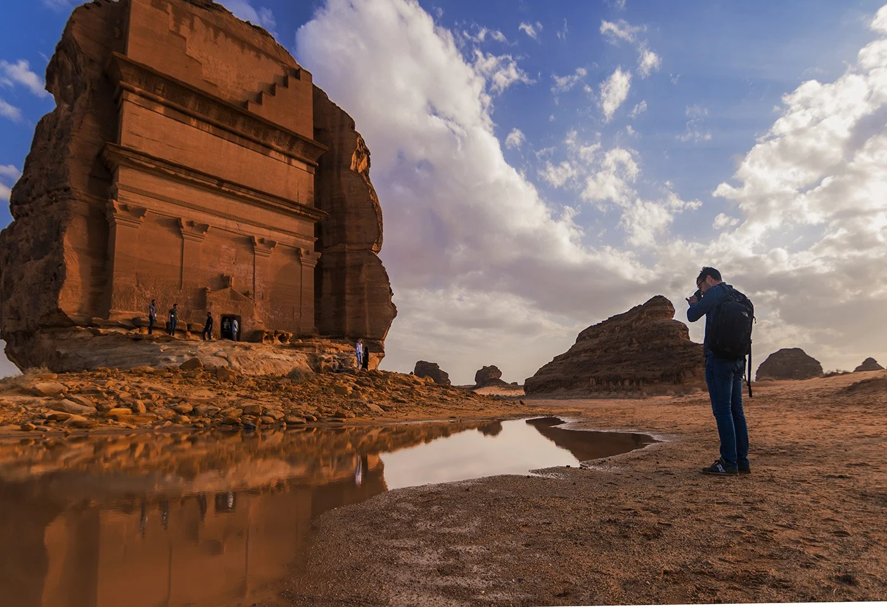
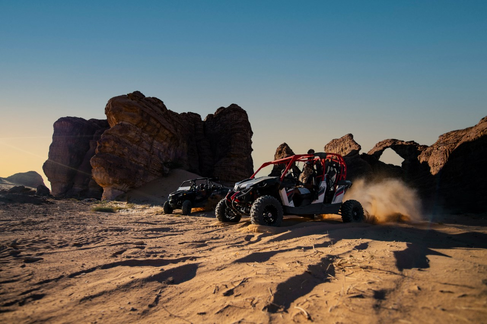
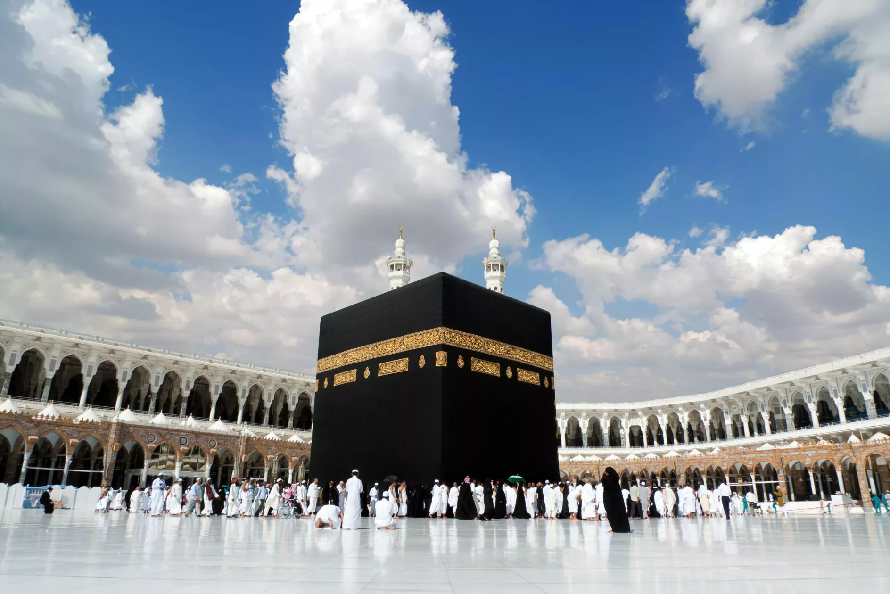
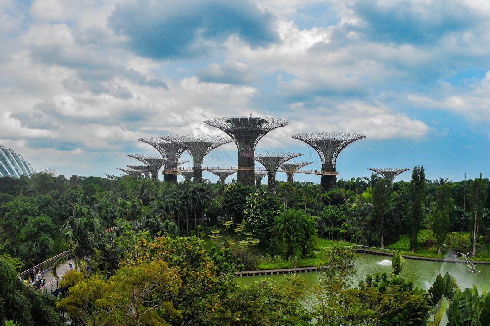
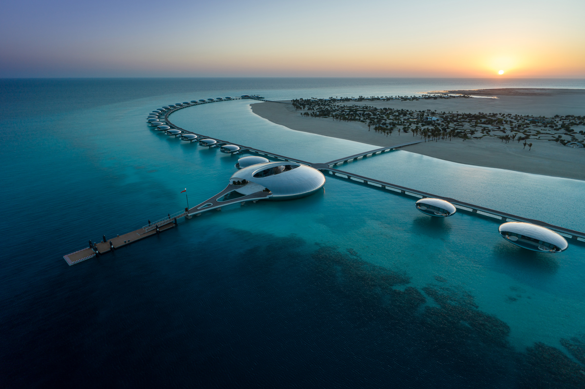

Types of Tourism in Saudi Arabia
Categories of Tourism
Cultural Tourism

Explore historic sites like Diriyah, vibrant traditional markets, and cultural festivals such as Janadriyah. Learn about Saudi Arabia's rich history and heritage.
Adventure Tourism

Engage in thrilling activities such as desert safaris in the Empty Quarter, hiking at the Edge of the World, and diving in the Red Sea.
Religious Tourism

Visit the holy cities of Makkah and Madinah for spiritual pilgrimages. Experience the serene and sacred environment of these historic locations.
Eco-Tourism

Discover natural reserves like the Farasan Islands and Asir National Park. Enjoy the Kingdom's unique biodiversity and scenic landscapes.
Luxury Tourism

Indulge in world-class accommodations, fine dining, and luxurious experiences at premium resorts in Al-Ula and Riyadh.
Key Attractions by Tourism Type
| Tourism Type | Key Attractions |
|---|---|
| Cultural Tourism | Historic Diriyah, traditional markets, Janadriyah Festival, Al-Balad in Jeddah |
| Adventure Tourism | Empty Quarter Desert, Edge of the World, Red Sea diving, Rock climbing in AlUla |
| Religious Tourism | Masjid al-Haram, Masjid an-Nabawi, Quba Mosque, Uhud Mountain |
| Eco-Tourism | Farasan Islands, Asir National Park, Al Ahsa Oasis, Edge of the World hiking trails |
| Luxury Tourism | Ritz-Carlton Riyadh, Al-Ula luxury resorts, King Abdullah Economic City, The Red Sea Project |